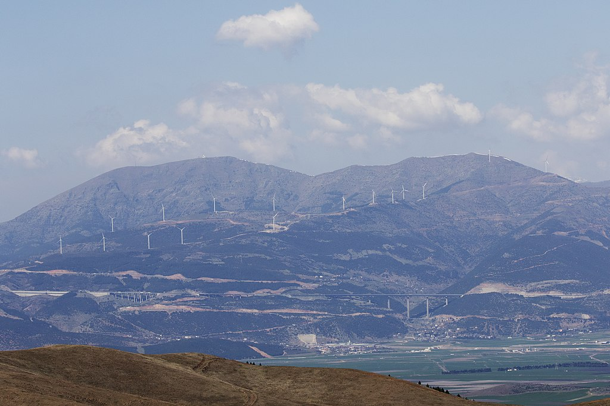

GAZİANTEP NURDAĞI İLÇESİ
Nurdağı, Türkiye'nin Gaziantep ilinin bir ilçesidir. Gaziantep-Adana karayolu üzerinde bulunmaktadır. 6 Şubat 2023'te meydana gelen depremlerden büyük ölçüde etkilenen Nurdağı ilçesinin tamamen yıkılıp başka bir bölgeye yeniden inşa edileceği açıklanmıştır. İslahiye ilçesine bağlı Kurudere köyünde, "Nurdağı" adıyla 27 Şubat 1976'da İçişleri Bakanlığı kararıyla belediye kurulmasıyla belde olan Nurdağı, 1990 yılında ilçe belediyesi olmuştur. Mevcut belediye başkanı AK Parti'li Mehmet Yıldırır'dır. 6 Şubat 2023'te Kahramanmaraş'ta meydana gelen 7.7 ve 7.6 büyüklüğündeki depremler sonucu Nurdağı ilçesinde yoğun yıkım olmuştur. Deprem sonrası yeni yapılan bazı binalarda oluşan yıkım sonucu yapılan soruşturma sonucu sorumluluğu ortaya çıkan eski belediye başkanı Ökkeş Kavak 25 Şubat 2023 tarihinde tutuklanmıştır

İLETİŞİM
ADRES:GAZİANTEP
TELEFON:0123456789